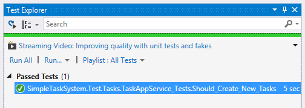

In this article, I'll show you how to create unit test ASP.NET Boilerplate based projects.
Instead of creating a new application to be tested, I'll use the same application developed in this article (Using AngularJs, ASP.NET MVC, Web API and EntityFramework to build NLayered Single Page Web Applications). Solution structure is like that:
We will test SimpleTaskSystem.Application, SimpleTaskSystem.Core and SimpleTaskSystem.EntityFramework projects here. This solution includes NHibernate, WebApi and UI projects. Testing presentation layer is a different topic. You can read that article to see how to build this application. Here, I'll focus on testing.
I created a new trong>Class Library project named SimpleTaskSystem.Test a and added following nuget packages:
When we add these packages, their dependencies will also be added automatically. Lastly, we should add reference to SimpleTaskSystem.Application, SimpleTaskSystem.Core and SimpleTaskSystem.EntityFramework assemblies since we will test these projects.
To create test class easier, I'll create a base class that prepares a fake database connection and projects under test:
public abstract class SimpleTaskSystemTestBase : AbpIntegratedTestBase
{
protected SimpleTaskSystemTestBase()
{
//Fake DbConnection using Effort!
LocalIocManager.IocContainer.Register(
Component.For<DbConnection>()
.UsingFactoryMethod(Effort.DbConnectionFactory.CreateTransient)
.LifestyleSingleton()
);
//Seed initial data
UsingDbContext(context => new SimpleTaskSystemInitialDataBuilder().Build(context));
}
protected override void AddModules(ITypeList<AbpModule> modules)
{
base.AddModules(modules);
//Adding testing modules. Depended modules of these modules are automatically added.
modules.Add<SimpleTaskSystemApplicationModule>();
modules.Add<SimpleTaskSystemDataModule>();
}
public void UsingDbContext(Action<SimpleTaskSystemDbContext> action)
{
using (var context = LocalIocManager.Resolve<SimpleTaskSystemDbContext>())
{
action(context);
context.SaveChanges();
}
}
public T UsingDbContext<T>(Func<SimpleTaskSystemDbContext, T> func)
{
T result;
using (var context = LocalIocManager.Resolve<SimpleTaskSystemDbContext>())
{
result = func(context);
context.SaveChanges();
}
return result;
}
}
This base class inherits AbpIntegratedTestBase. It's a base class which initializes the ABP system. It defines LocalIocContainer property, that is a IIocManager object. Each test will work with it's dedicated IIocManager. Thus, tests will be isolated from each other.
We overrided AddModules method to add the modules we want to test (Depended modules are automatically added).
In the constructor, we're registering DbConnection to dependency injection system using Effort. We registered it as Singleton (for LocalIocConainer). Thus, same database (and connection) will be used in a test even we create more than one DbContext in same test. SimpleTaskSystemDbContext must have a constructor getting DbConnection in order to use this in-memory database. So, I added the constructor below that accepts a DbConnection:
public class SimpleTaskSystemDbContext : AbpDbContext
{
public virtual IDbSet<Task> Tasks { get; set; }
public virtual IDbSet<Person> People { get; set; }
public SimpleTaskSystemDbContext()
: base("Default")
{
}
public SimpleTaskSystemDbContext(string nameOrConnectionString)
: base(nameOrConnectionString)
{
}
//This constructor is used in tests
public SimpleTaskSystemDbContext(DbConnection connection)
: base(connection, true)
{
}
}
In the constructor of SimpleTaskSystemTestBase, we're also creating an initial data in the database. This is important, since some tests require a data present in the database. SimpleTaskSystemInitialDataBuilder class fills database as shown below:
public class SimpleTaskSystemInitialDataBuilder
{
public void Build(SimpleTaskSystemDbContext context)
{
//Add some people
context.People.AddOrUpdate(
p => p.Name,
new Person {Name = "Isaac Asimov"},
new Person {Name = "Thomas More"},
new Person {Name = "George Orwell"},
new Person {Name = "Douglas Adams"}
);
context.SaveChanges();
//Add some tasks
context.Tasks.AddOrUpdate(
t => t.Description,
new Task
{
Description = "my initial task 1"
},
new Task
{
Description = "my initial task 2",
State = TaskState.Completed
},
new Task
{
Description = "my initial task 3",
AssignedPerson = context.People.Single(p => p.Name == "Douglas Adams")
},
new Task
{
Description = "my initial task 4",
AssignedPerson = context.People.Single(p => p.Name == "Isaac Asimov"),
State = TaskState.Completed
});
context.SaveChanges();
}
}
SimpleTaskSystemTestBase's UsingDbContext methods makes it easier to create DbContextes when we need to directly use DbContect to work with database. In constructor, we used it. Also, we will see how to use it in tests.
All out test classes will be inherited from SimpleTaskSystemTestBase. Thus, all tests will be started by initializing ABP, using a fake database with an initial data. We can also add common helper methods to this class in order to make tests easier.
Now, we will create first unit test to test CreateTask method of TaskAppService class. TaskAppService class is defined as shown below:
public class TaskAppService : ApplicationService, ITaskAppService
{
private readonly ITaskRepository _taskRepository;
private readonly IRepository<Person> _personRepository;
public TaskAppService(ITaskRepository taskRepository, IRepository<Person> personRepository)
{
_taskRepository = taskRepository;
_personRepository = personRepository;
}
public void CreateTask(CreateTaskInput input)
{
Logger.Info("Creating a task for input: " + input);
var task = new Task { Description = input.Description };
if (input.AssignedPersonId.HasValue)
{
task.AssignedPerson = _personRepository.Load(input.AssignedPersonId.Value);
}
_taskRepository.Insert(task);
}
//...other methods
}
In unit test, generally, dependencies of testing class is mocked (by creating fake implementations using some mock frameworks). This makes unit testing harder, especially when dependencies grows.
We will not do it like that since we're using dependency injection. All dependencies will be filled automatically by dependency injection with real implementations, not fakes. Only fake thing is the database. Actually, this is an integration test since it not only tests the TaskAppService, but also test repositories. Even we're testing with validation, unit of work and other systems in ASP.NET Boilerplate. This is very valuable since we're testing the application much more realistic.
So, let's create first test to test CreateTask method.
public class TaskAppService_Tests : SimpleTaskSystemTestBase
{
private readonly ITaskAppService _taskAppService;
public TaskAppService_Tests()
{
//Creating the class which is tested (SUT - Software Under Test)
_taskAppService = LocalIocManager.Resolve<ITaskAppService>();
}
[Fact]
public void Should_Create_New_Tasks()
{
//Prepare for test
var initialTaskCount = UsingDbContext(context => context.Tasks.Count());
var thomasMore = GetPerson("Thomas More");
//Run SUT
_taskAppService.CreateTask(
new CreateTaskInput
{
Description = "my test task 1"
});
_taskAppService.CreateTask(
new CreateTaskInput
{
Description = "my test task 2",
AssignedPersonId = thomasMore.Id
});
//Check results
UsingDbContext(context =>
{
context.Tasks.Count().ShouldBe(initialTaskCount + 2);
context.Tasks.FirstOrDefault(t => t.AssignedPersonId == null && t.Description == "my test task 1").ShouldNotBe(null);
var task2 = context.Tasks.FirstOrDefault(t => t.Description == "my test task 2");
task2.ShouldNotBe(null);
task2.AssignedPersonId.ShouldBe(thomasMore.Id);
});
}
private Person GetPerson(string name)
{
return UsingDbContext(context => context.People.Single(p => p.Name == name));
}
}
We inherited from SimpleTaskSystemTestBase as described before. In a unit test, we should create the object this will be tested. In the constructor, I used LocalIocManager (dependency injection manager) to create an ITaskAppService (it creates TaskAppService since it implements ITaskAppService). In this way, I got rid of creating mock implementations of dependencies.
Should_Create_New_Tasks is the test method. It's decorated with Fact attribute. Thus, xunit understand that this is a test method, and it runs the method.
In a test method, we generally prepare for the test, run the SUT (software under test - the actual testing code) and check if excepted results occured.
In Should_Create_New_Tasks method, we will create two tasks, one will be assigned to Thomas More. So, we will get the person (Thomas More) from database to obtain his Id and the current task count in database. Then we're creating two tasks using TaskAppService.CreateTask method. Finally, we're checking if people count increased by 2. We're also trying to get created task from database to see if it actually inserted to database.
Here, UsingDbContext method helps us while working directly with DbContext. If this test success, we understanda that CreateTask method can create Tasks if we supply appropriate input. Also, repository is working since it inserted to database.
To run tests, we're opening Visual Studio Test Explorer by selecting TEST\Windows\Test Explorer:

Then we're clicking 'Run All' link in the Test Explorer. It finds and runs all test in the solution:

As shown above, our first unit test is passed. Congratulations! A test will fail if testing or tester code is incorrect. Assume that we have forgotten to assign creating task to given person (To test it, comment out the related lines in TaskAppService). When we run test, it will fail:

Shouldly library makes fail messages clearer. It also makes it easy to write assertions. Compare Assert with Shouldly's extension method:
Assert.Equal(thomasMore.Id, task2.AssignedPersonId); //Using xunit's Assert task2.AssignedPersonId.ShouldBe(thomasMore.Id); //Using Shouldly
I think the second one is more easy and natual to write and read.
I want to create a second test for the CreateTask method. But, this time with an invalid input:
[Fact]
public void Should_Not_Create_Task_Without_Description()
{
//Description is not set
Assert.Throws<AbpValidationException>(() => _taskAppService.CreateTask(new CreateTaskInput()));
}
I expect that CreateTask method throws AbpValidationException if I don't set Description for creating task since it's marked as Required in CreateTaskInput DTO class (see source codes). This test success if CreateTask throws the exception, otherwise fails.
I'll test assigning a task from one person to another:
//Trying to assign a task of Isaac Asimov to Thomas More
[Fact]
public void Should_Change_Assigned_People()
{
//We can work with repositories instead of DbContext
var taskRepository = LocalIocManager.Resolve<ITaskRepository>();
//Obtain test data
var isaacAsimov = GetPerson("Isaac Asimov");
var thomasMore = GetPerson("Thomas More");
var targetTask = taskRepository.FirstOrDefault(t => t.AssignedPersonId == isaacAsimov.Id);
targetTask.ShouldNotBe(null);
//Run SUT
_taskAppService.UpdateTask(
new UpdateTaskInput
{
TaskId = targetTask.Id,
AssignedPersonId = thomasMore.Id
});
//Check result
taskRepository.Get(targetTask.Id).AssignedPersonId.ShouldBe(thomasMore.Id);
}
In this test, I used ITaskRepository to perform database operations, instead of directly working with DbContext. You can use one or mix of these approaches.
We can also test async methods with xunit. See the method written to test GetAllPeople method of PersonAppService. GetAllPeople method is async, so, testing method should be async:
[Fact]
public async Task Should_Get_All_People()
{
var output = await _personAppService.GetAllPeople();
output.People.Count.ShouldBe(4);
}
In this article, I wanted to show simply testing projects developed upon ASP.NET Boilerplate application framework. ASP.NET Boilerplate provides a good infrastructure to implement test driven development, or simply creating some unit/integration tests for your applications.